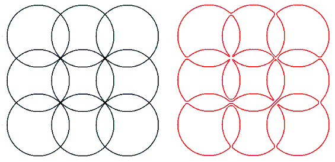

Let $C(x, y)$ be a circle passing through the points $(x, y)$, $(x, y + 1)$, $(x + 1, y)$ and $(x + 1, y + 1)$.
For positive integers $m$ and $n$, let $E(m, n)$ be a configuration which consists of the $m \cdot n$ circles:
$\{ C(x, y): 0 \le x \lt m, 0 \le y \lt n, x \text{ and } y \text{ are integers} \}$.
An Eulerian cycle on $E(m, n)$ is a closed path that passes through each arc exactly once.
Many such paths are possible on $E(m, n)$, but we are only interested in those which are not self-crossing: a non-crossing path just touches itself at lattice points, but it never crosses itself.
The image below shows $E(3,3)$ and an example of an Eulerian non-crossing path.

Let $L(m, n)$ be the number of Eulerian non-crossing paths on $E(m, n)$.
For example, $L(1,2) = 2$, $L(2,2) = 37$ and $L(3,3) = 104290$.
Find $L(6,10) \bmod 10^{10}$.
solve(m=1, n=2, mod=100) → ?solve(m=6, n=10, mod=10000000000) → ?solve(m=3, n=3, mod=10000000000) → ?